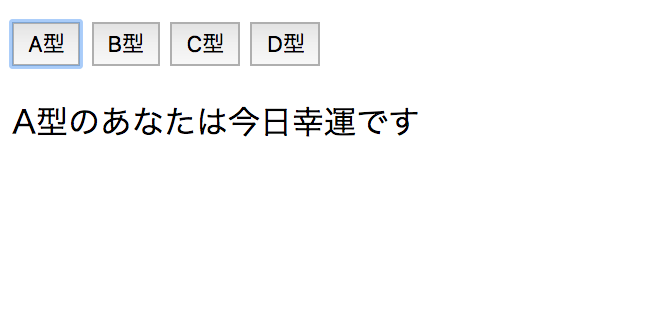

第1回RubyOnRails講習 javascript基礎文法編
今回はjavascriptの基本文法および,それを使って何ができるのかということをやっていきたいと思います
まずはhello worldからいきましょう
エディタでsample.htmlというファイルを作り,scriptタグを作ります.
<!DOCTYPE html>
<html>
<head>
Sample div tag
</head>
<body>
</body>
</html>
次に変数を扱いましょう.
var a = 1; // 今までのjsの変数の書き方.
let b = 1; // 新しいjs(ES6)の変数の書き方
const c = 1; // 定数(ES6)
// letはこんなこともできる
let foo = [2, 3, 4];
{
let foo = [1, 2, 3]; // このletはこの{}内でのみ有効
console.log(foo);
}
console.log(foo);
ES6は対応しているブラウザでしか動きません(IE8は流石に使っている人いないよね・・・？)
javascriptではC言語のようにint, char型といった型はなく, var let constを使って自動的に型を判別して代入してくれる機能を用いて変数を扱います
if, for, whileはC言語と文法はほとんど同じです.
let a = 1;
if (a == 1) { console.log("a = 1")}
else { console.log("a != 1")}
for (let i = 0; i < 10; i++) {
console.log(i);
}
関数定義はC言語と違い,変数に関数の中身を入れて扱っていく形になります
let hoge = function(a, b) {
console.log(a + b);
}
hoge(1, 3);
// こんな書き方もできるが,覚えられないなら無理してやらなくてもOK
let fuga = (a, b) => {
console.log(a + b);
}
fuga(2, 4);
// これでも関数宣言はできるが,変数に関数を代入する感覚を養って欲しいのでなるべく上の方法でやってください
function hoge1(b, c) { console.log(b + c); }
javascriptでは配列の他にオブジェクトというめちゃくちゃ便利なデータ構造があります
let hoge = {
"a": 1,
"b": [1, 3, 4, 5],
"c": {
"hoge": 1,
"fuga": 5
}
}
console.log(hoge["a"]);
console.log(hoge["b"]);
console.log(hoge["c"]);
console.log(hoge["c"]["hoge"]);
console.log(hoge["c"]["fuga"]);
このオブジェクトはこれからかなり使うと思うのでぜひ覚えてください
次にDOM操作というものをやります
DOMとはhtmlの要素のことを言い,(aタグとか)
DOM操作とはその要素の中身をjsから変えたり消したりする操作のことを言います
実際にやってみましょう, htmlファイルのscriptタグの外に適当なaタグをひとつ作りましょう
homepage
let a = document.querySelector("a"); // tagの指定によりDOMを取り出す
a.innerHTML = "changed
";
document.querySelector(".hoge").innerHTML = "changed 2
"; // classによる指定はこれ
document.querySelector("#fuga").innerHTML = "changed 3
"; // idによる指定はこれ
このようにjavascriptによってhtmlの内容を変えることができます. 全てを載せることはほぼ不可能に近いので「js DOM操作」で調べてみてください
以下のように、ボタンのイベントをjsで受け取ることもできる
プログラミング課題
課題 DOM操作
1. 以下のhtmlのhogeクラスをjavascriptのDOM操作によって自分の好きな文字列に変更せよ
Ruby on Rails講習
ここは変えないでね
2. 以下のhtmlのボタンが押されたら、alertを出すjsをかけ
確認ダイアログを出すjavascriptは以下のようにしてできる
window.alert("Clicked button!!");
3. 以下のhtmlのボタンが押されたら、確認ダイアログを出すjsをかけ そのダイアログはYesの場合googleへ、Noの場合 window.alert で適当な文字列を表示する
リダイレクトの処理は js内で location.href="url" でできる
確認ダイアログを出すjavascriptは以下のようにしてできる
let popup = function() {
window.confirm("Yes or No?");
}
window.confirmはユーザーの入力によって true, falseが帰ってくる つまり、OK, キャンセルによって違う処理を実装したいとなった場合
if (window.confirm("Yes or No?")) {
// Yesの場合の処理
}
else {
// Noの場合の処理
}
とすればよい
4. htmlのbuttonを使い,血液型占いを作りましょう
完成予想図
